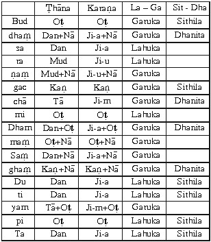

|
Trang web BuddhaSasana |
VU Times font |
|
|
GƯƠNG
BẬC XUẤT GIA
Dhammarakkhita Bhikkhu
Phần 3 NGHI THỨC XUẤT GIA Xuất gia nghĩa là từ bỏ nhà, sống đời sống không nhà (anagāriya). Nghi thức xuất gia cần phải theo tuần tự nghi lễ để trở thành bậc xuất gia. Bậc xuất gia (pabbajja) có 3 hạng. 1- Isipabbajja: Bậc xuất gia đạo sĩ. Trong quyển sách này, chỉ đề cập đến nghi thức thọ Sa di và Tỳ khưu trong Phật giáo mà thôi. 11 hạng người không được phép thọ Sa di 1- Trộm Tăng tướng Tỳ khưu: giả Tỳ khưu sống chung với Tỳ khưu
thật (theyyasaṃvāsaka). I- NGHI THỨC LỄ THỌ SA DI (Sāmaṇera) Bất cứ hạng tuổi nào có ý nguyện muốn từ bỏ nhà xuất gia trong Phật giáo, điều trước tiên xin thọ Sa di, sau mới thọ Tỳ khưu. Như Ðại Ðức Koṇṇañña sau khi nghe Ðức Phật thuyết giảng bài kinh Chuyển pháp luân xong, Ngài chứng ngộ chân lý Tứ thánh đế, chứng đắc Nhập Lưu Thánh Ðạo, Nhập Lưu Thánh Quả, trở thành bậc Thánh Nhập Lưu, Ngài đảnh lễ Ðức Phật, kính bạch xin rằng: - "Labheyyāhaṃ Bhante, Bhagavato santike pabbajjaṃ, labheyyaṃ
upasampadaṃ". Ðịnh nghĩa Sāmaṇera (Sa di) "Samaṇassa apaccaṃ sāmaṇero". Một người cận sự nam có ý nguyện thọ Sa di, Tỳ khưu, điều quan trọng đầu tiên, là người cận sự nam ấy phải được cha mẹ cho phép xuất gia. Nếu cha mẹ chưa cho phép, thì người cận sự nam ấy không nên tự tiện xuất gia. Nếu vị Tỳ khưu nào cho phép người cận sự nam thọ Sa di, thọ Tỳ khưu, mà chưa được cha mẹ cho phép xuất gia, vị Tỳ khưu ấy phạm giới tác ác (dukkaṭa). Khi người cận sự nam được cha mẹ cho phép xuất gia rồi, người cận sự nam ấy đến hầu đảnh lễ vị Ðại Ðức xin thọ Sāmaṇera: Sa di. Trong tập sách này sẽ trình bày nghi thức thọ Sa di, Tỳ khưu phổ thông, đang được hiện hành tại Myanmar (Miến Ðiện) từ trước cho đến nay. Nghi Thức Lễ Thọ Sa Di (Sāmaṇera) Nghi thức lễ thọ Sa di có 3 chi: 1- Kesacchedana: vị Tỳ khưu cạo tóc (cạo râu) cho giới tử. 1- Nghi Thức Cạo Tóc (râu) Trước khi cạo tóc (râu) cho người giới tử thọ Sa di, vị Ðại Ðức Thầy Tế độ phải thông báo cho toàn thể chư Tỳ khưu Tăng trong chùa được rõ. Vị Ðại Ðức luật sư bạch rằng: - Saṃghaṃ Bhante imassa dārakassa bhaṇṇu-kammaṃ āpucchāmi. Khi vị Ðại Ðức đang cạo tóc cho giới tử, đồng thời truyền dạy đề mục "tacapañcaka kammaṭṭhāna": Ðề mục quán tưởng thân ô trược có taca (da) là thứ 5, theo chiều thuận và chiều nghịch như sau: A- Theo chiều thuận: 1- Kesā: Tóc: tóc là vật ô trược, đáng nhờm. B- Theo chiều nghịch: 1- Taco: Da: da là vật ô trược, đáng nhờm. Ðề mục "tacapañcaka kammaṭṭhānā" này, giới tử Sa di nên quán tưởng phân biệt mỗi vật ô trượt bằng 5 pháp: - Màu sắc (vaṇṇa). Ví dụ: Quán tưởng về "tóc" như sau: - Màu sắc của tóc: màu đen, màu trắng,.... Trong sắc thân có 32 thể trược đều quán tưởng theo phương pháp như trên. Trong thời kỳ Ðức Phật còn tại thế, có những vị giới tử mới lên 7 tuổi làm lễ thọ Sa di, khi đang cạo tóc, vị giới tử ấy tiến hành thiền định và tiến hành thiền tuệ bằng đề mục "Tacapañca-kammaṭṭhānā" này, dẫn đến sự chứng ngộ chân lý Tứ thánh đế, chứng đắc 4 Thánh Ðạo, 4 Thánh Quả, trở thành bậc Thánh A-ra-hán trong khi cạo tóc vừa xong. Ví dụ: Tích giới tử Sankicca mới lên 7 tuổi, đệ tử của Ðại Ðức Sāriputta. Khi làm lễ xuất gia Ðại Ðức truyền dạy giới tử đề mục "Tacapañcaka", trong khi cạo tóc, giới tử Sankicca tiến hành thiền định và tiếp theo tiến hành thiền tuệ với đề mục "Tacapañcaka" này, dẫn đến sự chứng ngộ chân lý Tứ thánh đế, chứng đắc 4 Thánh Ðạo, 4 Thánh Quả, trở thành trở thành bậc Thánh A-ra-hán có Tứ tuệ phân tích, cùng một lúc vừa cạo tóc xong. Và tích giới tử Sīvali là Công tử con của bà hoàng Suppavasā và ông hoàng Koliya. Ngài đầu thai trong lòng mẹ suốt 7 năm 7 ngày mới chào đời. Sau khi Ngài sanh ra, mẹ của Ngài thỉnh Ðức Phật cùng chư Ðại Ðức Tăng làm phước suốt 7 ngày. Ðến ngày thứ 7, Ngài hầu chuyện với Ðại Ðức Sāriputta về nỗi khổ trong lòng mẹ. Ðại Ðức Sāriputta hỏi: - Này Sīvali, vậy con muốn xuất gia để giải thoát khổ hay không? - Kính bạch Ðại Ðức, hạnh phúc biết dường nào! Nếu cha mẹ con cho phép, thì con sẽ xuất gia. Công tử Sīvali bạch. Bà hoàng nghe thấy con mình hầu chuyện cùng Ðại Ðức Sāriputta như vậy, tâm vô cùng hoan hỉ, liền cho phép được xuất gia trở thành Sa di trong Phật giáo. Ðại Ðức Sāriputta truyền dạy giới tử Sīvali đề mục "Tacapañcaka" để tiến hành thiền định và tiếp theo tiến hành thiền tuệ trong khi cạo tóc. Bắt đầu cạo tóc, giới tử Sīvali chứng đắc Nhập Lưu Thánh Ðạo – Nhập Lưu Thánh Quả và tiếp theo chứng Ðắc Nhất Lai Thánh Ðạo – Nhất Lai Thánh Quả, Bất Lai Thánh Ðạo – Bất Lai Thánh Quả. Ðến khi cạo tóc vừa xong, đồng thời giới tử Sīvali cũng vừa chứng đắc A-ra-hán Thánh Ðạo – A-ra-hán Thánh Quả không trước không sau, khi ấy, Ngài vừa tròn đúng 7 tuổi lẻ 14 ngày. 2- Vị Ðại Ðức Thầy Tế Ðộ Cho Mặc Y Cà Sa 2.1- Cách thức đảnh lễ Ðảnh lễ (lạy) là một cử chỉ, thái độ biểu hiện ra bằng thân để tỏ lòng tôn kính của mình đối với ngôi Tam bảo, thầy Tổ, cha mẹ và những bậc đáng kính trọng. Theo Phật giáo, cách thức đảnh lễ (lạy) có đủ 5 chi: cúi đầu, 2 cùi tay, 2 đầu gối đụng sát trên mặt phẳng. Người đảnh lễ (lạy) làm các động tác theo tuần tự: A. Cúi xuống lạy - Ngồi tư thế chồm hổm, chắp 2 bàn tay đặt lên trán. B. Trở lại tư thế ngồi chồm hổm - Ngẩng đầu lên. Ðảnh lễ lần thứ nhì, lần thứ ba cũng lặp lại như trên. 2.2- Nghi thức dâng y cà sa Giới tử sau khi cạo tóc xong, đến hầu đảnh lễ cha mẹ ruột, hay cha mẹ đõ đầu, để xin những tấm y cà sa. Giới tử chắp 2 tay, để tấm y cà sa nằm ngang trên 2 cánh tay, đi bằng 2 đầu gối đến hầu vị Ðại Ðức Thầy Tế độ, để tấm y cà sa trước mặt, đảnh lễ vị Ðại Ðức Thầy Tế độ 3 lần, ngồi chồm hổm (ukkuṭikaṃ nisīditvā), chắp 2 tay, để tấm y cà sa gác ngang qua 2 cánh tay, đọc câu Pāḷi dâng tấm y cà sa đến vị Ðại Ðức Thầy Tế độ như sau: - Sakala-vaṭṭadukkha-nissaraṇa-nibbānassa sacchikaraṇatthāya, imaṃ kāsāvaṃ gahetvā, pabbajetha maṃ Bhante, anukampaṃ upādāya. "Kính bạch Ðại Ðức, xin Ngài nhận tấm y cà sa này, trên tay con. Xin Ngài thương con, cho con thọ Sa di, hầu mong chứng ngộ Niết Bàn, pháp giải thoát hoàn toàn mọi cảnh khổ tử sanh luân hồi. Bạch Ngài". Vị Ðại Ðức Thầy Tế độ nhận tấm y của giới tử dâng đến Ngài. 2.3- Nghi thức xin y cà sa Giới tử sau khi đã dâng tấm y cà sa đến cho vị Ðại Ðức Thầy Tế độ, đảnh lễ 3 lần xong, ngồi chồm hổm, chắp 2 tay ngang trán đọc câu Pāḷi xin lại tấm y cà sa như sau: - Sakala-vaṭṭadukkha-nissaraṇa-nibbānassa sacchikaraṇatthāya, etaṃ kāsāvaṃ datvā, pabbajetha maṃ Bhante, anukampaṃ upādāya. "Kính bạch Ðại Ðức, xin Ngài cho con tấm y cà sa kia. Xin Ngài thương con, cho con thọ Sa di, hầu để mong chứng ngộ Niết Bàn, pháp giải thoát hoàn toàn mọi cảnh khổ tử sanh luân hồi. Bạch Ngài". Vị Ðại Ðức Thầy Tế độ trao tấm y cà sa cho giới tử. Giới tử đưa 2 tay cung kính đón nhận tấm y cà sa từ trên tay của vị Ðại Ðức Thầy Tế độ. Giới tử để tấm y cà sa trước mặt, đảnh lễ vị Ðại Ðức Thầy Tế độ 3 lần xong, đỡ tấm y cà sa bằng 2 tay, chắp 2 tay, đi bằng 2 đầu gối lui ra. Thay y phục đời, khoác những tấm y cà sa vào, như sau: - Y nội (antaravāsaka) phần trên mặc che lỗ rún, phần dưới phủ đầu gối xuống 8 lóng tay, trước sau và xung quanh bằng nhau, không cao, không thấp. - Y vai trái (uttarasaṃghaṃ) mặc chừa vai bên phải, phần dưới phủ đầu gối xuống 4 lóng tay, trước sau các chéo y và xung quanh bằng nhau, không cao, không thấp. 3- Vị Ðại Ðức Thầy Tế Ðộ Cho Thọ Tam quy 3.1- Nghi thức sám hối Giới tử sau khi mặc y chỉnh tề, chắp 2 tay ngang ngực, đi bằng 2 đầu gối đến vị Ðại Ðức Thầy Tế độ, đảnh lễ 3 lần xong, ngồi chồm hổm chắp 2 tay ngang trán, tự mình thành tâm sám hối Tam bảo và các bậc Thầy Tổ, trước khi xin thọ Tam quy và Sa di giới. Giới tử thành tâm sám hối rằng: - Kính bạch Ðại Ðức, xin phép Ngài, con xin thành tâm sám hối những lỗi lầm do sự cố ý hay vô ý phạm đến Ðức Phật, Ðức Pháp, Ðức Tăng Tam bảo cùng các bậc Thầy Tổ từ trước cho đến hiện tại này. Kể từ nay về sau, con hết sức cố gắng thu thúc không để tái phạm. Kính xin Ngài chứng minh cho con, và nhận biết những lỗi lầm mà con đã sám hối. Bạch Ngài. Do tác ý thiện tâm này, khiến cho tất cả mọi điều tai hại không xảy đến với con, ý nguyện xuất gia giải thoát khổ tử sanh luân hồi của con sớm được thành tựu. (Ðảnh lễ 3 lần). Vị Ðại Ðức Thầy Tế độ khuyên dạy rằng: - Này giới tử con! Con đã nhận biết lỗi lầm của mình, do sự cố ý hay vô ý phạm đến Ðức Phật, Ðức Pháp, Ðức Tăng Tam bảo cùng các bậc Thầy Tổ, từ trước cho đến nay, Sư chứng minh và chấp nhận sự thành tâm sám hối, sửa chữa của con. Vậy kể từ nay về sau, con phải nên cố gắng thu thúc, tránh không nên để tái phạm. Người nào nhận biết được lỗi lầm của mình, biết sám hối sửa chữa đúng theo pháp luật của Ðức Phật, thì người ấy chắc chắn sẽ tiến hóa mọi thiện pháp trong giáo pháp của Ðức Phật. Giới tử bạch: Sādhu! Bhante! Sādhu! Lành thay! Lành thay! Bạch Ngài. 3.2- Nghi thức xin thọ Sa di Giới tử sau khi đã sám hối xong, đảnh lễ vị Ðại Ðức Thầy Tế độ 3 lần, ngồi chồm hổm chắp 2 tay ngang trán đọc câu Pāḷi xin thọ phép thọ Sāmaṇera: Sa di như sau: - Bhante saṃsāravaṭṭadukkhato mocanatthāya pabbajjaṃ yācāmi. Kính bạch Ðại Ðức, con xin phép thọ Sa di, hầu mong giải thoát khổ tử sanh luân hồi trong tam giới. Bạch Ngài. Kính bạch Ðại Ðức, con xin phép thọ Sa di, hầu mong giải thoát khổ tử sanh luân hồi trong tam giới, lần thứ nhì. Bạch Ngài. Kính bạch Ðại Ðức, con xin phép thọ Sa di, hầu mong giải thoát khổ tử sanh luân hồi trong tam giới, lần thứ ba. Bạch Ngài. 3.3- Nghi thức xin thọ Tam quy và Sa di thập giới Giới tử ngồi chồm hổm, chắp 2 tay ngang trán hướng về vị Ðại Ðức Thầy Tế độ, xin thọ Tam quy và Sa di thập giới, đọc như sau: - Ahaṃ [*] Bhante, tisaraṇena saha dasasāmaṇera-pabbajjasīlaṃ dhammaṃ yācāmi, anuggahaṃ katvā sīlaṃ detha m [*]e, Bhante. - Dutiyampi, ahaṃ Bhante, tisaraṇena saha dasasāmaṇerapabbajjasīlaṃ dhammaṃ yācāmi, anuggahaṃ katvā sīlaṃ detha me, Bhante. - Tatiyampi, ahaṃ Bhante, tisaraṇena saha dasasāmaṇerapabbajjasīlaṃ dhammaṃ yācāmi, anuggahaṃ katvā sīlaṃ detha me, Bhante. [*] Nếu có nhiều giới tử thì thay: "aham = mayam", "me = no". Kính bạch Ðại Ðức, con xin thọ trì Tam quy cùng Sa di thập giới; kính xin Ðại Ðức từ bi truyền Tam quy cùng Sa di thập giới cho con. Bạch Ngài. Kính bạch Ðại Ðức, con xin thọ trì Tam quy cùng Sa di thập giới; kính xin Ðại Ðức từ bi truyền Tam quy cùng Sa di thập giới cho con, lần thứ nhì. Bạch Ngài. Kính bạch Ðại Ðức, con xin thọ trì Tam quy cùng Sa di thập giới; kính xin Ðại Ðức từ bi truyền Tam quy cùng Sa di thập giới cho con, lần thứ ba. Bạch Ngài. Giới tử đảnh lễ vị Ðại Ðức Thầy Tế độ 3 lần. Vị Ðại Ðức hướng dẫn giới tử rằng: ÐÐ:- Yamahaṃ vadāmi, taṃ vadehi. Sư đọc đúng chữ, đúng câu nào, con hãy nên đọc theo đúng chữ, đúng câu ấy. Nếu có nhiều giới tử thì: ÐÐ:- Yamahaṃ vadāmi, taṃ vadetha. Sư đọc đúng chữ, đúng câu nào, các con hãy nên đọc theo đúng chữ, đúng câu ấy. Gt:- Āma, Bhante. Dạ, xin vâng. Bạch Ngài. ÐÐ:- Namo tassa Bhagavato Arahato Sammāsam-buddhassa. (3 lần). Con đem hết lòng thành kính đảnh lễ Ðức Thế Tôn, bậc A-ra-hán, bậc Chánh Ðẳng Giác. Gt:- Namo tassa Bhagavato Arahato Sammāsam-buddhassa. (3 lần). 3.3.1- Truyền Tam quy bằng Niggahitanta (ṃ) Truyền và thọ Tam quy vần chót bằng Niggahitanta, chữ "m" có chấm ở dưới (ṃ). Vị Ðại Ðức truyền đúng từng chữ, từng câu chấm dứt, giới tử đọc lặp theo đúng từng chữ, từng câu như sau:
ÐÐ:- Tisaraṇagamanaṃ paripuṇṇaṃ. Nghi thức quy y Tam bảo đầy đủ chỉ có bấy nhiêu! Gt:- Āma, Bhante. Dạ, xin vâng. Bạch Ngài. 3.3.2- Truyền Tam quy bằng Ma-karanta (m) Truyền và thọ Tam quy vần chót bằng ma-karanta, chữ "m" không có chấm ở dưới (m). Vị Ðại Ðức truyền và giới tử thọ như sau:
ÐÐ:- Tisaraṇagamanaṃ paripuṇṇaṃ. Gt:- Āma, Bhante. Nghi thức lễ thọ Sa di được thành tựu với điều kiện "Ubhato suddhi". Nghĩa là vị Ðại Ðức truyền Tam quy từng chữ, từng câu phải đúng theo ṭhāna, karaṇa, payatana của văn phạm Pāḷi, đúng theo 10 byañjana-buddhi; và giới tử đọc lặp theo đúng như vị Ðại Ðức, gọi là cả hai bên đều đúng (ubhato suddhi). Như vậy, khi giới tử đọc lặp theo đến lần thứ ba "Tatiyampi Saṃgham saraṇam gacchāmi" chấm dứt chữ cuối cùng "gacchāmi" thì giới tử ấy trở thành vị Sa di thật, có đầy đủ 10 giới Sa di, 10 pháp hoại, 10 pháp hành phạt, 75 điều học, 14 pháp hành cùng lúc trở thành Sa di không trước không sau. Trường hợp không thành tựu Sa di: Vị Ðại Ðức truyền Tam quy đúng, còn giới tử thọ Tam quy không đúng; hoặc vị Ðại Ðức truyền Tam quy không đúng, còn giới tử thọ Tam quy đúng; hoặc vị Ðại Ðức truyền Tam quy không đúng và giới tử thọ Tam quy cũng không đúng. Nếu bị một trong ba trường hợp này, thì cuộc lễ thọ Sa di không thành tựu, giới tử không trở thành vị Sa di thật trong Phật giáo. (Nếu không trở thành Sa di, tự nhận là Sa di, thì chỉ là giả danh). 3.4- Sa di thập giới Sau khi giới tử trở thành vị Sa di (Sāmaṇera) thật, phải thực hành theo 10 giới Sa di. Trong Luật tạng, bộ Mahāvagga, Ðức Phật truyền dạy như sau: "Anujānāmi bhikkhave sāmaṇerānaṃ dasa sikkhāpadāni. Tesu ca sāmaṇerehi sikkhituṃ. Pānātipātā veramaṇī; adinnadānā veramaṇī; abrahmacariyā veramaṇī; musāvādā veramaṇī; surā - meraya - majja - pamādaṭṭhānā veramaṇī; vikālabhojanā veramaṇī; nacca-gīta-vādita-visūka-dassanā veramaṇī; mālā-gandha-vilepana-dhāraṇa-maṇṇana-vibhūsanaṭṭhānā veramaṇī; uccāsayana-mahāsayanā veramaṇī; jātarūpa-rajata-paṭiggahanā veramaṇī. Anujānāmi bhikkhave sāmaṇerānaṃ imāni dasa sikkhāpadāni, imesu ca
sāmaṇerehi sikkhitun’ti". - "Này chư Tỳ khưu, đối với những Sa di, Như Lai cho phép thực hành theo 10 điều học. Sa di phải nên thực hành theo trong những điều học ấy là: 1- Tránh xa sự sát sanh. Này chư Tỳ khưu, đối với những Sa di, Như Lai cho phép thực hành theo 10 điều học. Sa di phải nên thực hành những điều học này cho được trong sạch". Có số sách khác, viết về, phần cuối mỗi điều học đều có thêm "sikkhāpadaṃ samādiyāmi". Vị Ðại Ðức truyền Sa di thập giới, và Sa di thọ 10 giới như sau: 1- Pānātipātā veramaṇisikkhāpadaṃ samādiyāmi. - Con xin thọ trì điều học, là tác ý tránh xa sự sát sanh. - Các giới khác chỉ thêm vào đầu câu "Con xin thọ trì điều học, là tác ý tránh xa...".... ÐÐ:- Tisaraṇena saha dasa sāmaṇerapabbajjasīlaṃ dhammaṃ sādhukaṃ katvā, appamādena sampādehi. (Nếu nhiều Sa di thay sampādehi bằng sampādetha). - Con đã thọ trì Tam quy cùng Sa di thập giới, con nên cố gắng giữ gìn cho được trong sạch làm nền tảng, để hoàn thành mọi phận sự Tứ thánh đế, bằng pháp không dể duôi, tiến hành Tứ niệm xứ. Sd:- Āma, Bhante. Dạ xin vâng! Bạch Ngài. 3.5- Nghi thức xin Thầy Tế độ Vị Sa di đảnh lễ vị Ðại Ðức 3 lạy xong, ngồi chồm hổm, chắp 2 tay đọc câu xin vị Ðại Ðức làm Thầy Tế độ như sau: Sd:- Upajjhāyo me Bhante hohi. (3 lần). Kính bạch Ðại Ðức, xin Ngài là Thầy Tế độ của con. Vị Ðại Ðức chấp thuận làm Thầy Tế Ðộ dạy rằng: ÐÐ:- Pāsādikena sampādehi. Con hãy nên thực hành đầy đủ giới, định, tuệ, được thể hiện qua thân, khẩu và ý xứng đáng để làm tăng trưởng đức tin. (Nếu có nhiều vị Sa di thì thay chữ "sampādehi" bằng "sampādetha"). Sd:- Āma, Bhante. Dạ xin vâng! Bạch Ngài. Ajjatagge thero mayhaṃ bhāro, ahampi therassa bhāro. Kể từ nay về sau, xin Ðại Ðức có phận sự dạy dỗ con, và con cũng có phận sự lo hầu hạ Ðại Ðức. Thầy Tế độ (Ācariyupajjhāya) Upajjhāya: Thầy Tế độ là vị mong tìm sự lợi ích, sự tiến hóa, sự an lạc lâu dài đến cho người đệ tử. - Theo Luật tạng, vị Ðại Ðức làm Thầy Tế độ cần phải có đủ 5 chi pháp như sau: 1- Có 10 hạ trở lên. Vị Ðại Ðức có đầy đủ 5 chi pháp này, mới có khả năng làm Thầy Tế độ (ācariyupajjhāya) cho giới tử thọ Sa di, Tỳ khưu. - Theo Kinh tạng, bài kinh Upasampadāsutta, Ðại Ðức Upāli bạch hỏi Ðức Phật những chi pháp nào để trở thành Thầy Tế độ rằng [Aṅguttaranikāya, phần Dasakanipāta, Kinh Upasampadāsutta]: - Kính bạch Ðức Thế Tôn, Tỳ khưu có những pháp nào, mới có thể làm Thầy Tế độ, cho giới tử thọ Sa di, Tỳ khưu. Bạch Ngài. Ðức Thế Tôn dạy rằng: - Này Upāli, Tỳ khưu hợp đủ 10 pháp, mới có thể làm Thầy Tế độ, cho giới tử thọ Sa di, Tỳ khưu. Mười pháp ấy là: 1- Trong Phật giáo này, Tỳ khưu là bậc có giới đức trong sạch, thu thúc trong giới pātimokkha, có hành vi cử chỉ tốt đẹp, thường nhìn thấy rõ điều tai họa lớn trong lỗi nhỏ, thọ trì giới luật nghiêm khắc. 2- Tỳ khưu là bậc đa văn túc trí, học nhiều hiểu rộng, thông thuộc Tam tạng, Chú giải, có chánh kiến, thuyết pháp hoàn hảo phần đầu, hoàn hảo phần giữa, hoàn hảo phần cuối, đầy đủ văn chương và ý nghĩa, hoàn toàn trong sạch và thanh tịnh. 3- Tỳ khưu là bậc thông thuộc Tỳ khưu giới (Bhikkhu-pātimokkha) và Chú giải rành rẽ, phân minh rõ ràng. 4- Tỳ khưu là bậc tự mình có khả năng hộ độ, hoặc nhờ người khác hộ độ đệ tử khi bệnh hoạn ốm đau. 5- Tỳ khưu là bậc tự mình có khả năng giúp khuyên giải, hoặc nhờ người khác khuyên giải được nỗi buồn chán, sự thối chuyển hành phạm hạnh của đệ tử. 6- Tỳ khưu là bậc có khả năng giúp làm vắng lặng những phiền não nóng nảy khó chịu phát sanh nơi đệ tử bằng chánh pháp. 7- Tỳ khưu là bậc có khả năng giúp làm tiêu tan tà kiến phát sanh nơi đệ tử bằng chánh kiến. 8- Tỳ khưu là bậc có khả năng dạy đệ tử thọ trì giới cao hơn (adhisīla). 9- Tỳ khưu là bậc có khả năng dạy đệ tử tiến hành thiền định cao hơn (adhicitta). 10- Tỳ khưu là bậc có khả năng dạy đệ tử tiến hành thiền tuệ cao hơn (adhipaññā). Này Upāli, Tỳ khưu có đầy đủ 10 chi pháp này mới có khả năng làm Thầy Tế độ cho phép giới tử thọ Sa di, Tỳ khưu. Tâm của Thầy Tế độ và tâm của đệ tử Tâm Thầy Tế độ và đệ tử Ðức Phật dạy rằng. - Upajjhāya bhikkhave siddhivihārikamhi puttacittaṃ upaṭṭhapessati, saddhivihāriko upajjhāyaṃpi pitucittaṃ upaṭṭhapessati. Evaṃ te aññamaññaṃ sagāravā sappatissā sabhāgavuttino viharantā, imasmiṃ dhammavinaye vuṇṇhiṃ viruḷhiṃ vepullaṃ āpajjissanti" [Vinayapiṭaka, bộ Mahāvagga, phần Upajjhāyavattakathā]. "Này chư Tỳ khưu, Thầy Tế độ quan tâm thương yêu người đệ tử như người cha thương yêu con; và người đệ tử cũng quan tâm kính yêu vị Thầy Tế độ như người con kính yêu cha. Như vậy, giữa Thầy Tế độ và đệ tử thương yêu kính trọng lẫn nhau, gần gũi thân cận nương nhờ nhau, cùng nhau sống trong chánh mạng, sẽ tăng trưởng, phát triển, thịnh hành trong Phật giáo này". Ðiểm Hệ Trọng Trong Lễ Thọ Sa di Lễ thọ Sa di được thành tựu, trở thành vị Sa di thật, điểm hệ trọng ở chỗ, "vị Ðại Ðức truyền Tam quy và giới tử thọ Tam quy", cả hai bên đều phải phát âm từng chữ từng câu đúng ṭhāna, karaṇa, payatana theo văn phạm Pāḷi và đúng theo 10 byañjanabuddhi. - Văn phạm Pāḷi. - 6 ṭhāna: 6 nơi phát âm. - 6 karaṇa: 6 nhân phát âm. Và đúng theo 10 byañjanabuddhi: sự thông thạo rành rẽ 10 cách phát âm của nguyên âm và phụ âm. Bảng chỉ dẫn cách phát âm Tam quy  Ghi chú: Kaṇ : Kaṇthaṭṭhāna – & : Kaṇthakaraṇa. Do đó, giới tử có ý nguyện thọ Sa di, điều trước tiên, cần phải gần gũi thân cận với một vị thầy để học cách thọ Tam quy, cách phát âm từng chữ, từng câu đúng theo ṭhāna, karaṇa, payatama của văn phạm Pāḷi. Ðiều này rất hệ trọng cho việc thành tựu lễ thọ Sa di, để trở thành vị Sa di thật trong Phật giáo. Trong Chú giải Luật tạng dạy: - "Sāmaṇerapabbajjā pana ubhato suddhiyā vaṭṭati, no ekato
suddhiyā". Vị Ðại Ðức truyền Tam quy và giới tử thọ Tam quy, cả hai đều đúng theo ṭhāna, karaṇa, payatama của văn phạm Pāḷi và đúng theo 10 byañjanabuddhi (ubhato suddhi), thì cuộc lễ thọ Sa di thành tựu, giới tử trở thành vị Sa di thật trong Phật giáo. Nếu vị Ðại Ðức truyền Tam quy đúng, còn giới tử thọ Tam quy không đúng; hoặc vị Ðại Ðức truyền Tam quy không đúng, còn giới tử thọ Tam quy đúng; hoặc vị Ðại Ðức truyền Tam quy không đúng và giới tử thọ Tam quy cũng không đúng; cả ba trường hợp này, thì cuộc lễ thọ Sa di không thành tựu, giới tử không trở thành vị Sa di thật trong Phật giáo. (Nếu không trở thành Sa di, tự nhận là Sa di thì chỉ là giả danh). 3.6- 10 Pháp Hoại Của Sa di Trong Luật tạng, bộ Mahāvagga: - Dasahaṅgehi samannāgato sāmaṇero nāsetabbo. Pāṇātipātī hoti; adinnādāyi hoti; abrahmacārī hoti; musāvādī hoti; surāmeraya-majjapāyī hoti; Buddhassa avaṇṇaṃ bhāsati; Dhammassa avaṇṇaṃ bhāsati; Saṃghaṃssa avaṇṇaṃ bhāsati; micchādiṭṭhiko hoti; Bhikkhunī dūsako hoti. Imehi kho dasahaṅgehi samannāgato sāmaṇero nāsetabbo. - Sa di phạm đến 1 trong 10 chi pháp, bị hư hoại phẩm hạnh Sa di. 1- Cố ý sát hại chúng sinh dầu nhỏ dầu lớn. Sa di phạm đến 1 trong 10 chi pháp này, thì bị hư hoại phẩm hạnh Sa di. Nếu Sa di cố ý phạm phải 1 trong 10 chi pháp này, ví dụ: "sát sanh". Sa di nào cố ý sát sanh, dầu giết một con vật nhỏ như con kiến, con muỗi, thậm chí đến các trứng kiến, trứng mối... cũng gọi là phạm giới sát sanh. Vị Sa di ấy bị hư hoại phẩm hạnh Sa di, không còn là Sa di thật trong giáo pháp của Ðức Phật nữa. Dầu trước đây, vị Sa di ấy được thành tựu do thọ đúng Tam quy, nay sau khi phạm 1 trong 10 chi pháp hoại, vị Sa di ấy bị đứt Tam quy và vị Thầy Tế độ. Bây giờ bên ngoài, thân chỉ có mặc bộ y còn sót lại mà thôi, bên trong tâm không còn phẩm hạnh Sa di nữa. Vì vậy, phẩm hạnh Sa di rất mỏng manh, nên cần phải có đức tin trong sạch nơi Ðức Phật, Ðức Pháp, Ðức Tăng. Nhờ đức tin trong sạch ấy, mới có tâm hổ thẹn tội lỗi, tâm ghê sợ tội lỗi, làm nhân duyên hỗ trợ cho việc giữ gìn giới được trong sạch; nếu không đủ đức tin, thì khó mà giữ gìn giới cho được trong sạch hoàn toàn. Nếu vị Sa di nào, biết mình đã phạm 1 trong 10 pháp hư hoại phẩm hạnh trên, vị Sa di ấy biết mình không còn là Sa di thật trong Phật giáo, thì nên đến đảnh lễ vị Ðại Ðức Thầy Tế độ sám hối và xin thọ phép Tam quy trở lại. Sau khi vị Ðại Ðức Thầy Tế độ hoặc một vị Ðại Ðức nào khác truyền Tam quy đúng và đệ tử thọ Tam quy đúng, cả hai bên đều đúng. Sau khi thọ Tam quy xong, người đệ tử trở thành Sa di mới trở lại. 3.7- 10 Pháp Hành Phạt Trong Luật tạng, bộ Mahāvagga: - "Dasahaṅgehi samannāgatassa sāmaṇerassa daṇṇakammaṃ kātabbaṃ. Vikālabhojanā hoti; nacca - gīta - vādita - visūka - dassanā hoti; mālā - gandha - vilepana - dharaṇa - maṇṇana vibhusanā hoti; uccāsayana - mahāsayanā hoti; jātarūpa - rajata - paṭiggahanā hoti; Bhikkhūnaṃ alābhāya parisakkati, Bhikkhūnaṃ anatthāya parisakkati, Bhikkhūnaṃ avāsāya parisakkati, Bhikkhū akkosati, paribhāsati, Bhikkhū Bhikkhūhi bhedeti. Imehi kho dasahaṅgehi samannāgatassa samaṇerassa daṇṇakammaṃ kātabbaṃ". - Ðối với Sa di phạm phải 1 trong 10 pháp, phải bị hành phạt là: 1- Thọ thực sái giờ (quá 12 giờ trưa). Ðối với Sa di phạm 1 trong 10 pháp này phải bị hành phạt. Sa di nào phạm phải 1 trong 10 pháp này, Sa di ấy sẽ bị hành phạt. Sự hành phạt chỉ là sự răn dạy để Sa di trở thành người thiện. Cho nên, mỗi khi Sa di phạm phải 1 trong 10 pháp hành phạt, thì vị thầy nên có tâm từ bi đối với Sa di, mà hành phạt. Cách hành phạt như múc nước, quét dọn xung quanh chùa.... -ooOoo- Ðầu trang | Mục lục | 1.1 | 1.2 | 2.1 | 2.2 | 3.1 | 3.2 | 3.3 | 3.4 | 3.5 | 3.6 | 4.1 | 4.2 | 4.3 | 4.4 | 4.5 | 5.0 |
|
Chân thành cám ơn Tỳ khưu Hộ Pháp đã gửi tặng bản vi tính (Bình Anson, 06-2003).
[Trở
về trang Thư Mục]
last updated: 10-06-2003